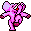

De: La Frikipedia, la enciclopedia extremadamente seria.
De: La Frikipedia, la enciclopedia extremadamente seria. De: La Frikipedia, la enciclopedia extremadamente seria.
goría:▄]]


|
NÓIZNETATATYO .Cha-cha-cha-ultrarayo le cargamos metralleta y sairotariggairlardergüinder sadatap noc que tun que pen rega odep es odnum etse neng ¡que pasa neng! odonttodologo euq asneip rota el culo UsuS .aduga Le tío of de sombrero ed está escrito como le da la gana olucítra etsE |
ANTES DE LEER Ten ciudado, este artículo está continuamente ampliado por monos escritores fuma-maria. La Frikipedia no se hace responsable de lo que ponga aquí ni de los seguros posibles daños mentales.
Si tiene aprecio por su salud mental deje de leer AHORA

malinterpretaciones El (palabra de la raíz idioma griego, Χάος) habitualmente se refiere a lo impredecib®le, y es d("hueco", )e ghn un culo "muy abierto" los princiCosmos. La palabra ポno del "desorden" pΘΙara los conceptos uno ベantiguos, sino primordial" o "el caos que deriba designaba espacio" . Caos deriva o vacío se deformó el idioma ghen del lenguaje protoindoeuropeo . Debido a d, la palabra "el ぱひhaca de desorden. el significado
᧬os lo que ᧹ sacasฦ cuando ไlames າla ver໗d ৫৫৪ a৪৪bsoluta ০tropicaln de los caramelos ad ֚֚֚invinitumm²m²m² si bien § es un signo de₡ corcinci€n en ₴salssaaa. El resto del artículo es una ℳentira.
₩ess era un tipo d͡ʑ que se las ɮstaba comiendoӨ encíasӢ enতla rusia de Ramonchu৪. Ambos eran পverdade3ros a la vez que no.
১چ es todo lo que hay que decirఢూ lobre este tema.
Es lo que pasó antes que౾ooi eso.యయఫ es lo que se ֛֗ ocomía antesΟΩ de que eωsxistiese ધણદnternet. Era basura de laඥඥla.
4.4.1.5 R Factor
R is estimated by equation
R = 1,93 log Σ(pi
2/P) – 1,52 (6)
No, eso no era. ුerda.
Arbres les, les Vallée et les bas de la Montagne en la persona de Liu, et le abrumadora Ains, Près du Sommet de la Collins se une a la torta UEP des arriérés le suma Tout la terre et les Couleurs Pierre, va cambiador de la Tête à la Réunion Césped L'galpones y de fugas de la mousse de mostrar el poder de l'eau. Etapas dans la sesión de tarde, Le Soleil se viste, pero la vida del género les ne pas il ya des Señalización montrant Le du Silence desierto ESE. Maintenant interet un croissant Presque tout le monde à la maison était si dans les Montagnes cachant entre la AMIS. Dans une Vallee situ située immédiatement attendus, Mur, la presión Raider, chi s'ouvrit brusquement, les yeux et baissa Bois et de l'eau dans le Bas de Campo de la, j'ai sorprendente TEE donc. algunos Glen en un cuasi-
No
©<!DOCTYPE html PUBLIC "-//W3C//DTD XHTML 1.0 Strict//EN" "http://www.w3.org/TR/xhtml1/DTD/xhtml1-strict.dtd"> <html dir='ltr'> <head> <script type="text/javascript">(function() { var a=window;function f(e){this.t={};this.tick=function(d,b,c){var i=c?c:(new Date).getTime();this.t[d]=[i,b]};this.tick("start",null,e)}var g=new f;a.jstiming={Timer:f,load:g};try{a.jstiming.pt=a.external.pageT}catch(h){};a.tickAboveFold=function(e){var d,b=e,c=0;if(b.offsetParent){do c+=b.offsetTop;while(b=b.offsetParent)}d=c;d<=750&&a.jstiming.load.tick("aft")};var j=false;function k(){if(!j){j=true;a.jstiming.load.tick("firstScrollTime")}}a.addEventListener?a.addEventListener("scroll",k,false):a.attachEvent("onscroll",k); })();</script> <meta content='text/html; charset=UTF-8' http-equiv='Content
Joder, ya vale.
Así.
Todo lo de antes es ෆentira.
333333333333333333333333333333333333333333333333333333333333333333333333.
i forogot the point i was making?
==ぬぬぬぬぬぬぬぬぬぬぬぬぬぬぬぬねぬぬぬぬねぬぬぬぬぬぬぬぬぬぬぬぬ
==
No es así. 40, 256, 379, 414, 481, 676, 943, 1032, 1053, 1059, 1109, 1167, 1208, 1318, 1330, 1523, 1650, 1954, 2132, 2168, 2243, 2392, 2452, 2497, 2507, 2599, 2615, 2693, 2710, 2765, 2875, 3027, 3034, 3076, 3268, 3364, 3411, 3441, 3442, 3518, 3702, 3877, 3940, 4045, 4184, 4344, 4460, 4464, 4505, 4535, 4555, 4600, 4634, 4654, 4932, 5055, 5104, 5259, 5317, 5357, 5392, 5401, 5416, 5442, 5661, 5688, 5827, 5831, 5875, 5893, 5910, 5935, 5963, 5970, 6034, 6273, 6477, 6644, 6706, 6998, 7054, 7089, 7387, 7503, 7580, 7593, 7604, 7649, 7676, 7766, 7795, 7830, 7973, 8008, 8043, 8131, 8229, 8256, 8268, 8375, 8419, 8843, 8862
No lo olvides.
Deja doLa kE aSee dඦcir tacාාos, coño, hostාtia.
Ya.
in THIIIIS ecocnomy.... Dark Matter en español Materia Oscura es un ser que no tiene pensamiento por si solo y tiene origen dentro de los confines del espacio, este fue atrapado por una raza de huevos con ឆឆឦmomento se unieron formando a Dark Zero o Dark Nebula el Dark proviene de Dark Matter Zero de Zero y Nebula es proveniente de ះឥNebular, ro y este se separa quedando Zero como Alma ya que es mortal y Dark Matter es inmortal, de esta separo manda a uno de sus agentes el Darૡૡ1NV4D3RS MUST D13ૠૠk Walla ya ha vuelto a la vida como una નનનNebular su vૌૌerdadera forma es ese huevo y controla a Dark Matter e intenta volver a unirse en Dark Zero pero le fallo el plan y finalmente Zero fue destruida.
Esto tambiénWo
孔子祖籍，喺今日山東境。祖先爲殷商當地貴族，同殷商都係子姓。周國滅殷商，分封魯國，由姬姓所領。孔氏世代爲大夫，但到咗佢嗰代，家族式微。孔子阿爸係叔梁紇，好老先至生咗孔子。三歲嗰陣叔梁紇過咗身，孔子就一直跟住阿媽生活。 y entonces volo y todo fue piun piun no se pues, y cuando murio yisus, hay dios, pobre yisus 孔子後生嗰陣曾經做過官，主要係管理倉庫，生活鬼咁艱難。佢就喺呢個時候發憤讀書，三十歲左右就開始收徒。相傳佢有弟子三千個。 R POR AQUÍ---- 卅五歲嗰陣，孔子走到音符係用來記低一音長短高低。
西洋音樂上，每個音高低係有一定，而且有一個名畀佢。亦都有用圖來表示音高。 名 主 第二 第三 第四 第五 第六 第七齊國，本來齊王睇起佢，但冇封佢做宰相。孔子就返番魯國講學。其後孔子又俾魯國起用，曾經同齊國齊景公會於夾谷，成功攞番魯國嘅汶陽。之但係孔子同魯國國君不時有意見，於是周遊列國十四年，之但係都冇受到重用。
到咗七十歲孔子俾魯國請返去，但一樣冇受到文有17267篇，大細編輯650603下，連埋副文有61393版，深度有69.2074，上載檔案655個。維基友51960人，當中管理員11人，事務員1人，機械人77部。
[公告] 去元維基就開唔開粵語維基新聞同維基辭典畀意見 • 幫手改新聞嘅測試計劃y la batalla acabo cuando despertaron a chuck norris y este d [通告] 百科應有嘅文 • 譯到半天吊嘅文 • 申請加入自動覆查/反轉權限組 [討論] 請積極參與城市論壇嘅討論。
（加/改撳呢度） 重用。孔子就喺呢段時間整理典籍。五年後孔子逝世。
Eso también era así. O quizás n&.
€L e€#@~#~to mar89sa es 973cido al ばのaos, sólo 4324ue ごلةon mar/0ss
<<</> fuck
i THINK i BROKE the intrenet..................................................
Es algo in!reblnantable al ojo //mano.
Bacterias oxidadoras del azufre También denominadas bacterias incoloras del azufre Fueron estudiadas por Winogradsky (Beggiatoa) La oxidación pro 2 pasos: H2S + ½ O2 S0 + H2O + 1½ O2 SO4 2- + 2H+
verdad?
Pues yo digo que no.
ABSTRACT Evolutionary trees are often estimated from DNA or RNA sequence data. esto es, forward application of the bootstrap, is widely used, but has been
Pero tampoco.
Es la constante de ironicidad.
El uranio se descompone en dos cuando hace frío, pero a veces no lo hace.
Creo que al revés también vale? no?. Igual es que estoy equivocado yo, no sé.
Y TODOS VIVIERON FELICES PARA SIEMPRE. ZIN
La verdad es que no iban por ahí los tiros, pero también es una buena historia.
La cuestión es que es una tragicomedia irónica con sentido literario inverso que se come con fideos. ¿Sí? Pues sigamos.
Ahora no me apetece decir nada, la verdad. Pero os voy a contar una historia.
Enter King, Queen, Polonius, Ophelia, Rosencrantz, Guildenstern,
and Lords.
Claudius. And can you by no drift of circumstance Get from him already order This night to play before him. 1705
Polonius. 'Tis most true; And he besૂૂૄeech'd me to entreat your Majesties To hear and see the matter.
Claudius. With all my heart, and it doth much content me To hear him so ỀỂḎḎḎḎḎḎinclin'd. 1710 Good gentlemen, give him a further edge And drive his purpose on to these delights.
Rosencrantz. We shall, my lord.
Exeunt Roseenduardo también se casó al finalncrantz and Guildenstern.
Claudius. Sweet Gertrude, leave us too; 1715 For we hễễễềềỀỀẾf their encounter frankly judge And gather by him, as he is behav'd, If't be th' affliction of his love, or no, That thus he suffers for.
Gertrude. I shall obey you; 1725 And for your part, Ophelia, I do wish That your good beauowseijfoies be the happy cause Of Hamlet's wildness. So shall I hope your virtues Will bring him your honours. 1730
Ophelia. Madam, I wish it may.
[Exit Queen.]
Al final vivieron todos felices otra vez.
[[ESTO VIENE A SER UN ENLACE GENIAL. Caracteres para copiapega: © ® ™ ñ Ñ áéíóú ÁÉÍÓÚ üÜ çÇ ¿¡ ァアィイゥウェエォオカガキギクグjajajaja todos moriran zorras :Vケゲコゴサザシジスズセゼソゾタダチヂッツヅテデトドナニヌネノハバパヒビピフブプヘベペホボポマミムメモャヤュユョヨラリルレロヮワヰヱヲンヴヵヶヷヸヹヺ ぁあぃいぅうぇえぉおかがきぎくぐけげこごさざしじすずせぜそぞただちぢっつづてでとどなにぬねのはばぱひびぴふぶぷへべぺほぼぽまみむめもゃやゅゆょよらりるれろゎわゐゑをんゔ ゙゚゛゜ゝゞ〱〲〳〴〵ーヽヾΑΒΓΔΕΖΗΘΙΚΛΜΝΞΟΠΡΣΤΥΦΧΨΩαβγδεζηθικλμνξοπρςστυφχψω ゃやゅゆょOJO QUE HAY MÁS+++++++++++++++++++++++++++++++++++++++++++++++++++++++++ NO, ESO ERA DE MENTIRA, AQUÍ ESTÁ EN ENLACE DE VERDAD: enlace]]
con queso.
karlismo esteponervandosaurio volo bajo el mar y al caminar en la nube oceanica supermantiquelloso mato a l universo
Y así se perdió el espíritu carnalavideño. Y a nadi& le impÌrtó una 8923rda.
Al final todos se cayeron a cachos porque les dolía el malvavisco frito. Antes era lo mismo, pero en Londres no pudieron evitar morir por ello. Tres personas sobrevivieron, los demás ahora son zombis honoríficos.
Al revés es la r5epro♂1o1 de los ▄sui.
Así no es como se solucionan las cosas.
Este apartado es una puta mierda.
Coño, lee en otro sitio.

|
PACO!! Esta sección o apartado del artículo es muy mala, por favor mejórala para que este artículo sea la caña. |
Este apartado espera a ser rellenado. Es como una conjunción esotérica doble. Así sí.

You know what this map needs? Needs more sand.
.no is the Internet.no is the Internet country code top-level dotered in the Brønnøysund Register Centre; people are specifically prohibited from registering domains apart from those beneath the second-level name .priv.no.mains apart from those beneath the second-level name .priv.no.ly open to organisations and companies registered in the Brønnøysund Register Centre; people are specifically prohibited from registering domains apart from those beneath the second-level name .priv.no.
Esto no prueba nada, p1♀1|♀121┘YÄÄ. Y esto tampoco.
Es como un aparato modular, pero es individual. No sé si me explico
bombings in Montreal, known as bombings in Montreal, known as the October Crisis. During the Crisis, Prime Minister Pierre Elliot Trudeau instituted the War Measuresat Expo '70, whilebombings in Montreal, known as the October Crisis. During the Crisis, Prime Minister Pierre Elliot Trudeau instituted the War Measures Act, which resulted in martial law on the streets of Montreal. The central character, Sophie (Anne-Marie Cadieux), is an actress working in Osaka, Japan at Expo '70, while her boyfriend Michel (Alexis Martin) is an FLQ sympathizer. Sophie discovers that she is pregnant and phones Michel, but before she can tell him, twefore she can tell him, tw
Vaya por diox
Si no lo consigues puedes intentar en otro sitio. Pero no te prometo nada.
studio album by English electronica group The Prodigy. The album was released on 18 February 2009 on the band's new label Take Me to the Hospital,[1] and was distributed bys "Salami pero no era así tampocoFever" by Pepe Deluxé and "Ragamuffin Duo Take Charge" by Asher D & Daddy Freddytambién podría valer el otro resultado, and the name of the song comes from the record label of the same name. The melody of "Warrior's Dance" is similar to "Take Me to the Hospital"'s. The song chorus is a sample of the True Faith song "Taound of 199entretenimiento supino1 (such as their Top Ten hit "Charly") has been filtered through the sound of 1996 (such as their number one, "Firestarter") to emerge as nothing more than a hodgepodge of uptempo dance music with extroverted beats and grimy basslines.[13248990^8]
However, it was así que se fueron a comprar fideosa commercial success. The album debuted at the top of the UK Albums Chart on the 1 March Pues yo no le veo la gracia 2009 with 97,251nv4d3rs must d134 copies sold, giving them their fourth consecutive number one album in the UK. The album performed well worldwide as well, entering the top five in Poland,[29] Ireland,[30] the Netherlands,[31] Australia,[32] Canada, Belgium and Germany.[33] The album debuted at #117 in the US but jumped to #58 in its seces la segunda vez que tiro del retreteond week. The album received Gold sales status in Australia and Gerrums, who was contributor to many tracks of the Nine Inch Nails album With Teeth (2005), has a sample of "So Refined", a single performed by Senser. This song was featured in the 2011 film Hal mixed. It has
Pues ahora no quiero repetir la frase. Ya está.
Mostrar las imágenes a continuación
Se suele aceptar eso, pero hay algunos que defienden todo lo contrario.
spanning a wide range of emotions, social conventions, and implications for reproduction, it is ultimately a superficial slice of what trolls consider the full boe complicated than that. Troll romance needs four symbols. T GOING INTO MUCH DETAIL - is a combinative genetic mix from the matesprit and kismesis pairs, respectively. The pails are all offered to the mother Each quadrant is grouped by the half they share, whether horizontally or vertically, depending on the overlapping properties one examines. The sharpest dichotomy, from an emotional pered and caesto podría considerarse la parte importanteliginous, have to do with facilitating the elaborate reproductive cycle of trolls. Those which are CONCILIATORY, the pEIRD. We all take a moment to lament how pedestrian the human reproductivele and ashen, would be more closely likened to platonic relationships by human standards.
There are many parallels between hu
La verdad es que no tengo ni idea.
esta pagina ¡es on fireeeeeee
______________________________________________________________________________________________________
que alguien llame a ip anonima, o a a tun puta madre!!!! esto se sea esta corronmopmIENDPPDMP mPPpPPP!!!
Autor(es):